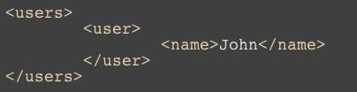
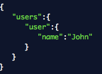

Webbteknik II
1DV449

Linnéuniversitetet, HT2012

Detta verk är licensierat under en
Creative Commons Erkännande-IckeKommersiell-DelaLika 3.0 Unported Licens.
Föreläsare, handledare
Johan Leitet,
johan.leitet@lnu.se,
Skype: hiktstjo
Kursansvarig, föreläsare, handledare:
John Häggerud,
john.haggerud@lnu.se,
Skype: john-hik
VAD?
- Programmable Web
- Mobile Web
- Semantic Web
- Real-time Web
Först och främst handlar denna kurs om webben och webbtekniker. Vi kommer titta på webbens utveckling och framgång men också blicka framåt. Kursen kommer fokucera kring möjligheten att använda webben som en plattform för att sammanbinda information till nya applikationer via så kallade webb-API:r till mashupapplikationer. Vi kommer också studera begrepp som sementiska webben, realtidswebben och den mobila webben där man försöker göra webbtekniker och webbstandarder möjliga att producera applikationer för alla typer av enheter.
HTTP
Vi kommer också studera tekniken bakom hur webben fungerar och då speciellt applikationsprotokollet HTTP som ligger till grund för all webbkommunikation. Denna kunskap kommer också ge kunskap om prestandahöjande åtgärder i din webbapplikation samt ge en teoretisk grund för att gå vidare och studera REST.
Datautbytesformat
XML, JSON


I och med att vi pratar om en programmeringsbar webbplattform kommer vi in på utbytesformat, hur applikationer pratar med varandra på ett standardiserat sätt. Vi kommer göra en liten djupdykning i någon XML-tekonologi...
XSLT, XPath
Transformering och sökning
...Nämligen XSLT som oss möjligheter att göra transformationer ifrån en XML-källa. Vi kommer ockkså praktiskt testa på detta i laborationskursen.
Mashups
Webb-API:er
REST
Stor del i denna kurs kommer fokusera på dessa begrepp. Möjligheten att använda befintliga, och öppna upp egen data till andra utvecklare.
Webbsäkerhet
Responsiv
Design
Någonting som vi på senare år har hört mycket om är den mobila webben, möjlighet att använda webbteknik på mobila enheter. En vidare syn är att vi kommer att använda webbtekniker för att utveckla applikationer för alla typer av enheter, vanliga datorer, mobila enheter, TV-apparater o.s.v. Ett begrepp vi kommer fästa lite vikt vid här är "responsiv design" d.v.s. möjligheten att skriva en design som anpassar sig till skärmstorleken.
KURSPLAN
Arbeta med webbtekniker samt använda dessa för utveckling mot olika enheter.
Redogöra för olika säkerhetsrisker som kan förekomma i en webbapplikation.
Utveckla nya och använda befintliga webbtjänster (webbapi:er) samt sammanfoga dessa till en enhetlig applikation (Mashupapplikation).
EXAMINATION
1. Laborationskurs (U/G)
Laborationsförberedande seminarium i grupp
Individuella laborationer
2. Projektuppgift (U/3/4/5)
Enskild större uppgift (mashup-applikation)
FÖRKUNSKAPER
- Webbteknik I 7,5hp (1DV403) eller motsvarande
- PHP, 7,5 hp (1DV408) eller motsvarande
Förmåga att självständigt sätta sig in och lösa problem med ovanstående kunskap
FRÅGOR?